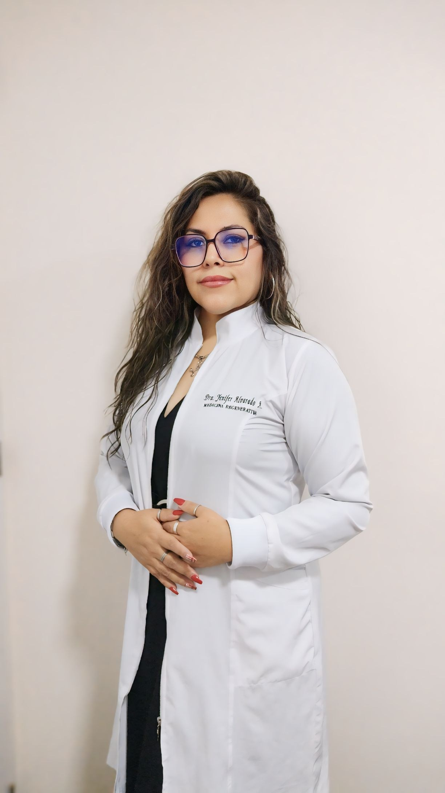

Dra. Yenifer Alvarado Amau
Ozonoterapia y medicina regenerativa, con trato humano
Tratamientos integrativos para el dolor, la recuperación y el cuidado de la piel, con evaluación médica personalizada.
Reservar evaluación
Ozonoterapia
Aplicación médica de oxígeno-ozono en dosis controladas, como complemento de otros tratamientos.
La indicación y el número de sesiones se definen después de una evaluación clínica. No reemplaza el tratamiento médico convencional.
Evaluación médica
Conversamos sobre tu historia, tus síntomas y tus objetivos.
Plan personalizado
Definimos la vía de aplicación y el número de sesiones.
Aplicación
La sesión se realiza en la sala de procedimientos, con equipo médico de ozono.
Seguimiento
Revisamos tu evolución y ajustamos el plan.
Especialidades destacadas
Conoce nuestras áreas principales de atención integrativa.
Manejo del Dolor
Tratamientos regenerativos para articulaciones, columna y recuperación muscular sin cirugía.
Ver tratamientosPiel y Estética
Rejuvenecimiento facial, láser especializado y bioestimulación para una piel sana.
Ver tratamientosAtención Especializada
Procedimientos ecoguiados en un consultorio moderno y con trato cálido y empático.
Ver consultorio